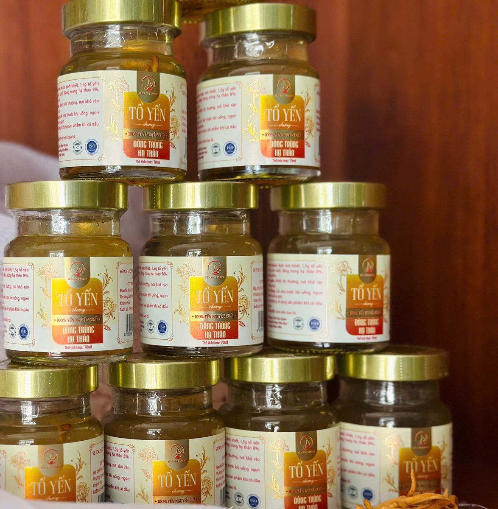
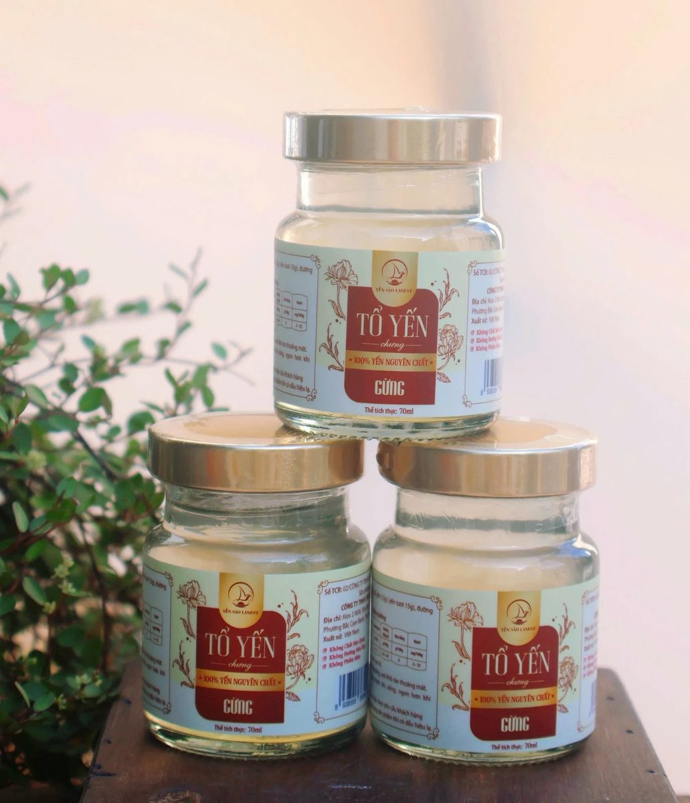

Yến Chưng Nguyên Chất 100% Có 3 Vị: Đường Phèn, Đông Trùng Hạ Thảo, Gừng Khác Nhau Thế Nào, Chọn Vị Nào?
Yến Sào Lanest · Đăng ngày 21/11/2026

Khách đã quyết mua dòng yến chưng nguyên chất 3 vị của Lanest thường hỏi tiếp một câu: lấy vị nào? Ba hũ cùng lượng yến, cùng nắp vàng, cùng hũ 70ml, chỉ khác nhau ở thứ chưng cùng yến. Bài này đặt ba vị cạnh nhau theo đúng những gì in trên nhãn, để anh chị chọn cho mình, cho ba mẹ hay để biếu mà không phải đoán.
Hũ Tổ Yến Chưng Đông Trùng Hạ Thảo Nguyên Chất 100% xếp tháp, bên cạnh là sợi đông trùng hạ thảo
1. Ba vị giống nhau ở đâu?
Trước khi nói khác, nói giống. Cả ba hũ thuộc cùng một dòng, nên phần "xương sống" y hệt nhau:
- Lượng yến: mỗi hũ 1,5g tổ yến, tương đương khoảng 15g yến tươi.
- Thể tích: hũ thủy tinh 70ml.
- Nền: nước tinh khiết và đường phèn. Vị nào cũng có đường phèn.
- Những thứ không có: không chất phụ gia, không chất bảo quản, không phẩm màu. Hũ được chưng tiệt trùng.
Nghĩa là chọn vị nào thì lượng yến anh chị nhận được cũng như nhau. Thứ quyết định là anh chị thích mùi vị nào và người dùng là ai. Nếu anh chị còn đang phân vân giữa dòng nguyên chất và dòng 7g yến tươi, nên đọc bài yến hũ nguyên chất 100% và yến hũ 7g khác nhau thế nào trước.
2. Đặt 3 vị cạnh nhau
| Đường phèn | Đông trùng hạ thảo | Gừng | |
| Thành phần trên nhãn | Nước tinh khiết, 1,5g tổ yến, đường phèn (8%) | Nước tinh khiết, 1,5g tổ yến, đông trùng hạ thảo (8%), đường phèn | Nước tinh khiết, 1,5g tổ yến, gừng 0,7g, đường phèn |
| Mùi vị | Vị yến nguyên bản, ngọt thanh | Có thêm mùi của đông trùng, nước yến ngả vàng | Có mùi gừng rõ, ấm |
| Cách dùng ghi trên nhãn | Dùng ngay, ngon hơn khi uống lạnh | Dùng ngay, ngon hơn khi uống lạnh | Lắc nhẹ trước khi uống |
| Hợp với | Người mới dùng yến, người mới ốm dậy, cả nhà | Người lớn tuổi, người cần bồi bổ, người làm việc áp lực | Người hay lạnh bụng, người làm việc khuya, người lớn tuổi |
Dòng "Hợp với" lấy từ bản mô tả vị cùng tên mà Lanest dùng để tư vấn. Đó là gợi ý theo khẩu vị và thói quen, không phải chỉ định cho bệnh nào.
3. Vị đường phèn: chọn khi chưa biết chọn gì
Đây là hũ "gốc" của dòng nguyên chất: chỉ có nước, tổ yến và đường phèn. Không có mùi thảo mộc nào chen vào, nên anh chị cảm được rõ nhất vị của chính sợi yến, ngọt thanh và mát khi uống lạnh.
Lanest hay gợi ý vị này cho ba trường hợp: người lần đầu dùng yến hũ, người lớn tuổi khó tính với mùi lạ, và người vừa ốm dậy muốn ăn thứ gì nhẹ. Khi mua biếu mà không rõ khẩu vị người nhận, đường phèn cũng là lựa chọn ít rủi ro nhất. Ai thích tự chưng ở nhà theo kiểu truyền thống có thể xem thêm bài yến chưng đường phèn.
4. Vị đông trùng hạ thảo: khi muốn một hũ "đậm" hơn
Nhãn ghi đông trùng hạ thảo chiếm 8%, chưng cùng tổ yến và đường phèn. Nhìn qua thành hũ sẽ thấy nước yến ngả vàng, khác hẳn màu trong của hũ đường phèn. Vị có thêm mùi riêng của đông trùng, nên người đã quen yến thường thấy hũ này "có chiều sâu" hơn.
Bản mô tả vị của Lanest xếp đông trùng hạ thảo cho người lớn tuổi, người cần bồi bổ và người đang làm việc nhiều áp lực. Đây cũng là vị khách hay chọn khi biếu ông bà, cha mẹ. Lưu ý: hũ có đông trùng hạ thảo là thực phẩm, không phải thuốc bổ hay thuốc chữa bệnh. Bài yến chưng đông trùng hạ thảo nói kỹ hơn về vị này ở dòng 7g.

Ba hũ Tổ Yến Chưng Gừng Nguyên Chất 100%, nhãn đỏ, thể tích thực 70ml
5. Vị gừng: cho người thích ấm bụng
Mỗi hũ có 0,7g gừng, chưng cùng 1,5g tổ yến và đường phèn. Tài liệu giới thiệu sản phẩm ghi gừng tươi tự nhiên trong hũ giúp làm ấm cơ thể, hỗ trợ tiêu hóa. Bản mô tả vị gợi ý vị này cho người hay lạnh bụng, người làm việc khuya và người lớn tuổi.
Nói thật để anh chị chọn cho đúng: mùi gừng trong hũ khá rõ. Trong một đợt khảo sát của Lanest, có góp ý cho rằng yến vị gừng hơi nồng, nên không phải ai cũng hợp. Người thích vị nhẹ nên thử đường phèn trước; người vốn thích gừng thì sẽ thấy hũ này dễ uống, nhất là vào những ngày trời lạnh. Nhãn dặn lắc nhẹ trước khi uống để vị gừng đều trong hũ.
6. Chọn nhanh theo từng trường hợp
- Mua lần đầu, chưa biết mình thích gì: bắt đầu bằng đường phèn.
- Biếu ông bà, cha mẹ: đường phèn nếu người nhận ăn nhạt, khó tính với mùi lạ; đông trùng hạ thảo nếu người nhận đã quen yến.
- Người hay lạnh bụng, thích đồ ấm: gừng.
- Cả nhà dùng chung: mỗi người một vị, đổi qua lại trong tuần cho đỡ ngán.
- Người cần hạn chế đường: cả ba vị nguyên chất đều có đường phèn. Khi đó nên xem hai vị dùng đường isomalt của dòng 7g trong bài yến chưng đường ăn kiêng, và hỏi bác sĩ trước.
Dù chọn vị nào, cách dùng vẫn vậy: người lớn dùng khoảng 2–3 lần mỗi tuần, chọn lúc bụng nhẹ như sáng sớm hoặc tối trước khi ngủ khoảng một tiếng. Chưa mở nắp thì để nơi khô ráo, thoáng mát; đã mở thì cất lạnh và dùng sớm. Hạn dùng xem trên bao bì. Người đang điều trị bệnh, đang dùng thuốc hoặc đang mang thai nên hỏi bác sĩ trước khi dùng thường xuyên. Cách cất cả hộp cho đúng có trong bài bảo quản yến hũ chưng sẵn.
Câu hỏi thường gặp
Ba vị nguyên chất có cùng lượng yến không?
Có. Hũ nào cũng 1,5g tổ yến, tương đương khoảng 15g yến tươi, thể tích 70ml. Ba vị chỉ khác ở thứ chưng cùng: đường phèn, đông trùng hạ thảo hay gừng.
Yến chưng gừng nguyên chất có cay không?
Mùi gừng khá rõ, có người thấy hơi nồng. Nếu không quen vị gừng, anh chị nên thử một hũ trước, hoặc chọn đường phèn.
Vị nào hợp làm quà?
Cả ba đều dùng làm quà được. Đông trùng hạ thảo hợp người đã quen yến; đường phèn hợp khi chưa rõ khẩu vị người nhận. Ý tưởng chọn quà có thêm ở bài quà biếu yến sào.